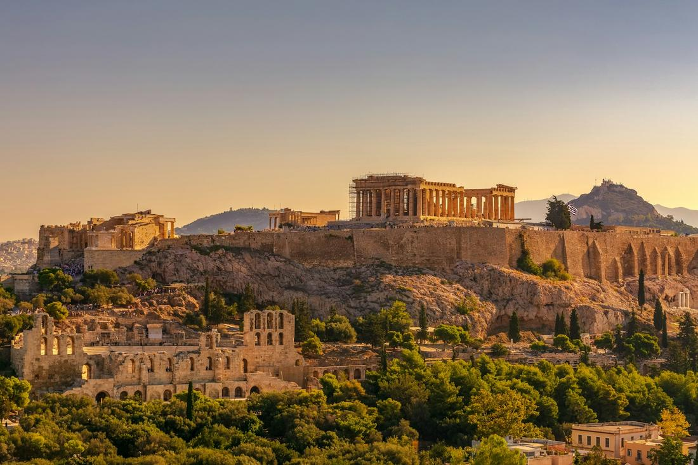
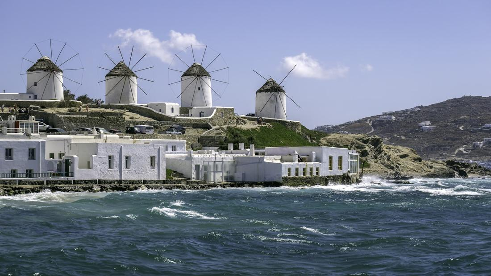

Where whitewashed villages, ancient ruins, and endless Aegean blue make every day feel like a postcard.
Greece is the trip I recommend to clients who want their vacation to feel like a completely different world, and it delivers that from the moment you land. Between the whitewashed, blue-domed villages of Santorini, the ancient marble ruins of Athens, and the beach-club energy of Mykonos, this is a country that somehow does history, romance, and pure relaxation equally well. I have booked this for honeymooners chasing sunset views, history-loving families, and groups of friends who just want a few days of island time, and every one of them comes back completely under its spell.
What makes Greece so rewarding to plan is how distinct each stop feels. Athens roots your trip in thousands of years of history, standing beneath the Parthenon in a way that photos never quite prepare you for. Santorini trades that for cliffside caldera views and sunsets that stop entire crowds in their tracks. Mykonos, meanwhile, is all beach clubs, whitewashed lanes, and the ancient ruins of Delos just a short boat ride away. Together, they cover everything from ancient wonder to island glamour in one trip.
As your travel advisor, I love stringing these islands and cities together into an itinerary that flows the way you want to experience Greece, whether your priority is history, romance, or island time. Here are three excursions I love arranging for clients heading to Greece, each one built around real, iconic experiences worth planning your trip around.

This is the excursion that made me fall in love with Santorini, and I build it for nearly every client who visits the island. The day usually starts in Fira or Oia, wandering the narrow whitewashed lanes past blue-domed churches and bougainvillea-draped balconies, with the caldera, the collapsed volcanic crater that gives the island its dramatic cliffside views, stretching out below. From there, we move onto the water for a catamaran cruise around the caldera itself, often with stops to swim near the hot springs off the island of Nea Kameni or to sail past the smaller island of Thirasia. Many of these cruises include a barbecue lunch and local wine on board, which makes for one of the most relaxed afternoons you will spend anywhere in Greece. The whole day builds toward sunset in Oia, widely considered one of the best sunset views in the world, where the sky turns the whitewashed village gold and pink as everyone gathers along the caldera's edge to watch. I always tell clients to save this excursion for one of their first days on the island, because once they see Santorini this way, everything else feels like a bonus.

This is the day I build for clients who want to feel the weight of history before ever leaving the mainland. We start at the Acropolis, climbing up to the Parthenon itself, the temple that has defined the Athens skyline for nearly 2,500 years, along with the Erechtheion and its famous Caryatid porch. From there, the Acropolis Museum offers a close-up look at the sculptures and artifacts pulled straight from the hill above, a great way to make sense of what you just walked through. Once the history-heavy morning winds down, we cross into Plaka, the oldest neighborhood in Athens, for a walking food tour through its narrow, flower-lined streets, think fresh souvlaki, warm spanakopita, Greek olive oil tastings, and baklava from a bakery that has been perfecting it for generations. Depending on the pace, we can add a stop at the ancient Agora or simply leave extra time to wander Plaka's small shops and cafes. This combination of ancient ruins in the morning and real, local Greek flavors in the afternoon is exactly the kind of day that makes Athens so much more than a layover before the islands.

This is the excursion I build for clients who want both sides of Mykonos, the laid-back beach days and the deep ancient history, in a single trip. We usually start with a boat tour along the coastline, hopping between beaches like Paradise and Super Paradise for swimming, sunbathing, and that easy island energy Mykonos is famous for. From there, the boat continues to Delos, the small uninhabited island just offshore that is, remarkably, one of the most important archaeological sites in all of Greece, believed by ancient Greeks to be the birthplace of Apollo. Wandering the ruins of its ancient marketplace, temples, and the iconic Terrace of the Lions feels like stepping into another world entirely, especially coming straight from a beach club. We wrap the day back in Mykonos Town, wandering the whitewashed alleys of Little Venice and the famous row of windmills overlooking the sea, especially beautiful at sunset. This mix of island beach time and genuine ancient history is what makes Mykonos so much more than just a party island, and it is one of my favorite full days to arrange for clients who want to see all of it.